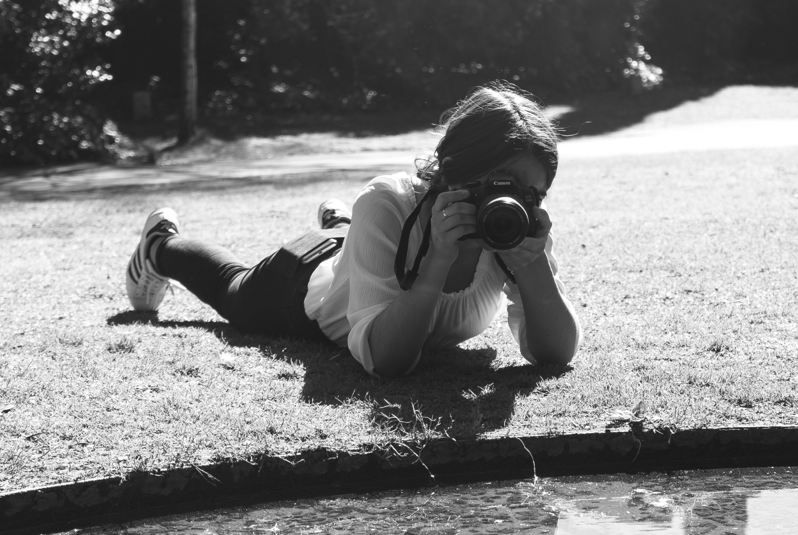

April 08, 2019
Pinhole Camera Workshop
Realization of photographic records through a pinhole camera and understanding the negative and positive revelation process. This workshop consists of learning and building an obscure camera through a shoebox or a can. In addition to making the photographic records, this project allowed us to reveal the negative and positive of them, using the ESELx photography lab. Our diaphragm is f: ± 886, therefore the exposure time is longer. Performed with Inês Bento.
 January 11, 2019
January 11, 2019
Photobook
Here are some pictures that I take in my free time. This is a sample from my personal photobook.
May 19, 2018
Another point of view

A look behind the photos. People already see the final product and this is about the work behind which they're unaware.
May 08, 2018
La Belle Ferronnière
Recreation

Photographic recreation of Leonardo da Vinci's paint, La Belle Ferronnière (1490). Performed with Inês Bento and António Baptista. For a recreation loyal to the original painting, we elaborate the robes and accessories. The image was produced in studio and was subject to post production in photoshop for lighting improvements and skin treatment.
May 23, 2018
The Color of
Emotions
Photo shoot performed under the project "The Color of Emotions", with Inês Bento, Maria Inês and Afonso Sousa. With colored cellophane sheets we create different types of lighting under the models. This series consists of photographic portraits that through color and illumination express feelings.
March 20, 2017
8th Edition of the
Photography Contest 2017

Honorable mention in the 8th Edition of the Photography Contest 2017 of the Agrupamento de Escolas Pioneiros da Aviação Portuguesa. The theme of this contest was "contrasts", for which I made this photographic record containing the complementary colors blue and orange. The image is inverted horizontally so that the shadows in the puddle gain prominence and create some illusion.